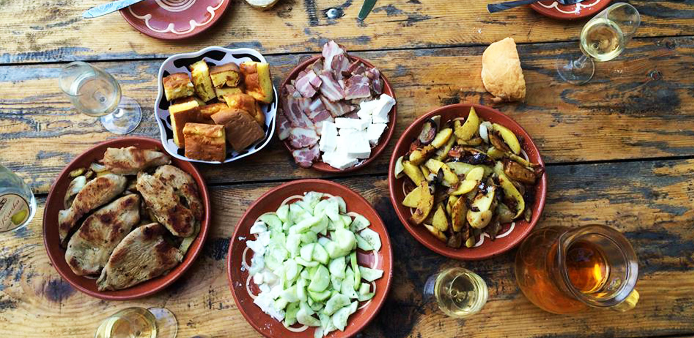
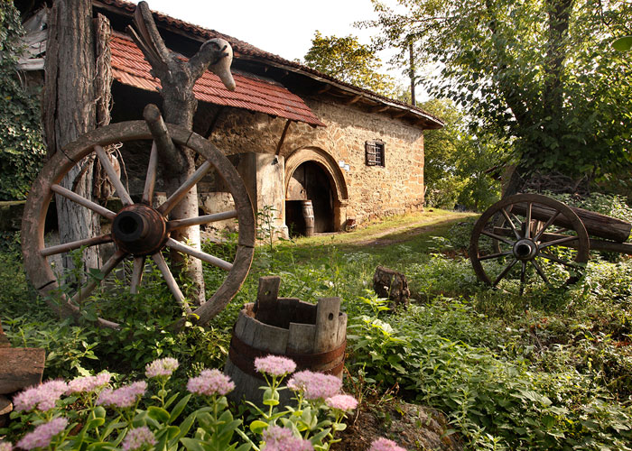
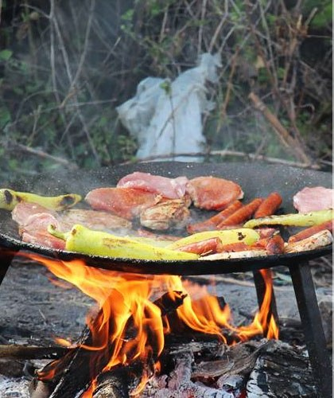
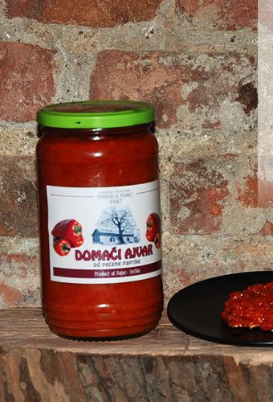
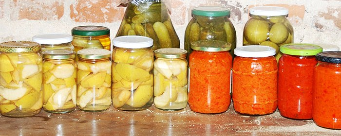
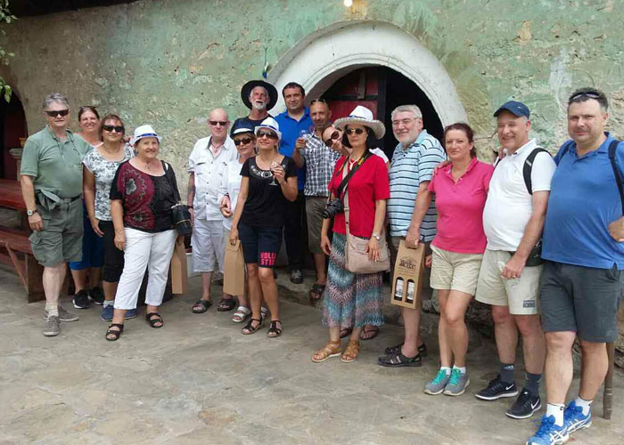
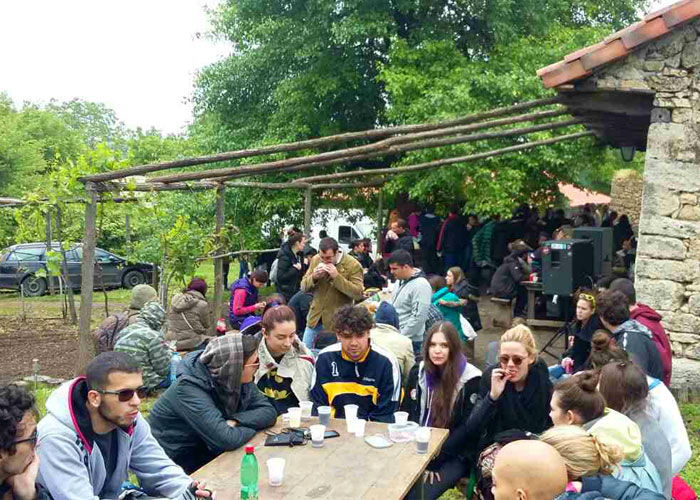
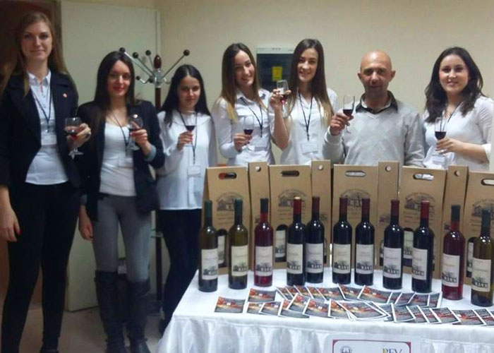
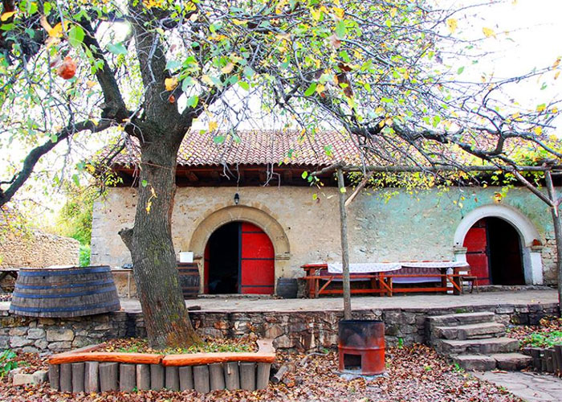

I
Degustacija u pimnici
Vina iz podruma ukopanog u zemlju, uz priču domaćina o sortama, kraju i porodici. Na velikoj terasi pod lozom ili u svežini podruma kada je leto najtoplije.
Naša vina
Degustacije, tradicionalna trpeza, proslave i praznici vinogradara, u kamenom ambijentu Rajačkih pimnica.
Vina iz podruma ukopanog u zemlju, uz priču domaćina o sortama, kraju i porodici. Na velikoj terasi pod lozom ili u svežini podruma kada je leto najtoplije.
Naša vina
Jela po bakinim receptima od domaćih, organskih namirnica: dimljeno meso iz naše pušnice, sirevi, gibanica, proja i kačamak.
Jelovnik
Rođendani, venčanja, poslovna druženja i grupe — na terasi pimnice, u etno restoranu ili u podrumu u sklopu apartmana.
Saznajte više
Velika ljuljaška sa predivnim pogledom, ležaljka u hladu vinove loze i šetnja kamenim sokacima među dve stotine pimnica.
O pimnicamaSpremanje hrane je poseban deo naše tradicije. Za mnoge naše specijalitete ne postoji prava reč u stranim jezicima, a ni ukus sa kojim bi se uporedili — zato je najbolje doći i probati.




Iz našeg špajza na vašu trpezu: tegle koje se spremaju krajem leta, kao u svakoj krajinskoj kući.
Organizujemo različite skupove, proslave i druženja: u prirodnom ambijentu terase pimnice, u etno restoranu ili u podrumu u sklopu apartmana.
Dugi stolovi pod lozom, na samom ulazu u Rajačke pimnice.
Degustaciona sala sa 30 mesta pod kamenim svodovima, u domaćinstvu u selu.
Za manja, posebna druženja među bocama i buradima.




Od zimskog mirovanja do berbe i mladog vina — evo šta se u vinogradu i podrumu dešava u mesecu vaše posete.
Loza miruje pod mrazom, a vino polako zri u podrumu.
Sveti Trifun: prva rezidba i zdravica vinogradu.
Rezidba i vezivanje loze pred novu sezonu.
Loza „plače“ i kreće prvi pupoljak.
Vinograd cveta, a u Negotinu je Sajam meda i vina.
Zameću se bobice; dani za terasu pod lozom.
Grozdovi rastu, a podrum čuva svežinu u najtoplije dane.
Grožđe menja boju i skuplja šećer; kraj meseca najavljuje berbu.
Berba grožđa — najživlji deo godine u pimnicama.
Mošt vri u podrumu, a pimnice mirišu na vino.
Pretakanje i prva proba mladog vina.
Zimnica u špajzu, vino u buradima i duge večeri uz vatru.
Slava vinogradara: orezuje se prva loza, zaliva vinom i nazdravlja dobroj godini.
Međunarodna manifestacija u Negotinu na kojoj predstavljamo vina naše pimnice.
Učestvujte u tradicionalnoj berbi i proslavi koja je prati, kao što se ovde radi generacijama.

Za smeštaj, degustaciju, ručak ili proslavu najbrže je da nas pozovete ili pišete porukom. Rado ćemo vam predložiti termin i ponudu po meri.
Otvoreno 365 dana u godini · Cene na upit